カメラの手ブレや被写体の動き、あるいはピントのズレによってぼやけてしまった画像・動画から、ブレ（歪み）を取り除いて鮮明な画像を復元するコンピュータービジョン（画像処理）のタスク
真っ白な背景に、黒い点の被写体×1個のみからなるシーンを撮影する状況を考える。
カメラの手ブレや被写体の動き、ピントのズレがあると、撮影した画像はこんな感じになる。
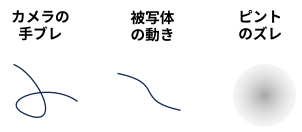
※ 実際には "これらの組み合わせ＋ノイズ" が撮影される。
撮像システムが線形シフト不変であると仮定すると、上の画像はインパルス応答
(画像の場合は PSF: Point Spread Function 点拡がり関数と呼ばれる) であり
ブレ画像の生成過程は以下のように定式化される。
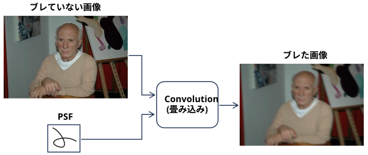
Deblur はこれの逆問題を解くタスクであり、non-blind と blind の二種類がある。
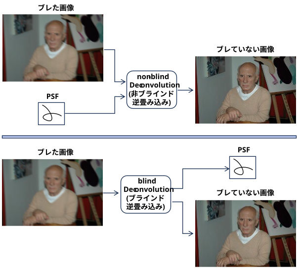
※ Deblur ・・・ ブレやボケを除去するというタスク
Deconvolution ・・・ Deblurを実現するための数学的手法
Blind Deconvolution は解が一意には決まらないので、拘束条件(正則化、事前知識など)が必要。
(課題があっても、「元々そういう被写体だったんじゃないですか？」と一応言ってみる、やる気のない人はどこにでもいそう･･･)
(見たことのない被写体でも、一発でブレていると判る、人の認知とは一体･･･)
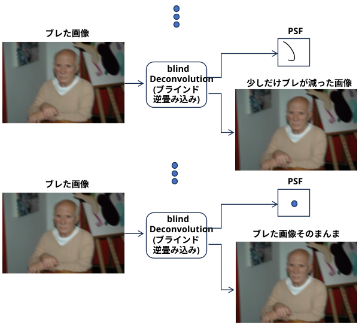
Blind Deconvolution で使われる事前知識の例
・Dark Channle Prior
ブレる → 異なるピクセル値が平均される → 灰色に近づく → 黒レベルが浮く
・画像勾配
ブレる → 異なるピクセル値が平均される → 画像勾配が減る
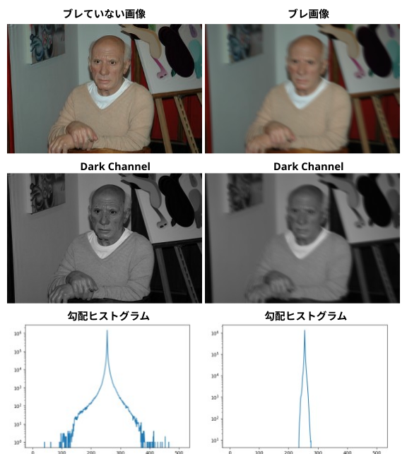
各種手法、論文、プロジェクトページ、コード(github)へのリンクは https://github.com/subeeshvasu/Awesome-Deblurring にまとめられている (解説はないけど･･･)。
(以下は AIモードの受け売り)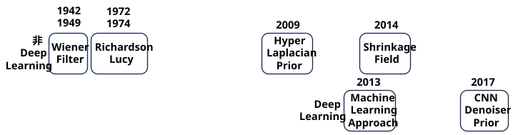
Wiener Filter
『Extrapolation, Interpolation, and Smoothing of Stationary Time Series』 (1942 機密レポート, 1949 一般公開)
ノーバート・ウィーナー（Norbert Wiener）によって1940年代に考案された。第二次世界大戦中の1942年に軍の機密レポートとしてまとめられた後、1949年に 『The Extrapolation, Interpolation, and Smoothing of Stationary Time Series』という書籍(通常イエロー・ブック)として一般向けに正式出版された。
もともと 1 次元の時系列信号（レーダー信号など）のノイズ除去や予測を目的としたものだったが、信号の劣化モデル（ブレに相当する線形システム）と加法性ノイズが存在する中で「元の信号と復元信号の平均二乗誤差（MSE）を最小化する」という数学的枠組みを提示した。
この理論が、後に1960年代〜70年代にかけてデジタル画像処理の黎明期（Helstromらによる研究など）に2次元（画像空間・周波数空間）へと拡張され、ブレカーネル（点拡がり関数: PSF）が既知である前提の古典的なnon-blind deblurring手法の元祖として広く使われるようになった。
\[
\begin{align}
& \hat{X}(u,v)=\Bigg[\frac{H^*(u,v)}{|H(u,v)|^2+K}\Bigg]Y(u,v) \\
& \hat{X}(u,v):\text{ ブレが除去された画像をFFTしたもの(推定値)}\\
& Y(u,v):\text{ ブレてノイズが載った観測画像をFFTしたもの}\\
& H(u,v): \text{ PSFをFFTしたもの。OTF：Optical Transfer Function (光学伝達関数)}\\
& H^*(u,v): H(u,v)\text{ の複素表役}\\
& K: \text{ノイズ対信号のパワー比を表わす正の定数}
\end{align}
\]
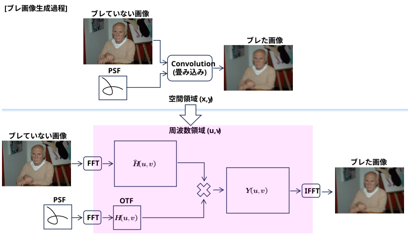
お試しコード
(data/task_deblur/src/deblur_by_wiener_filter.py)
・ 第一引数： ブレ画像
・ 第二引数： ブレ・カーネル画像 (黒地に白の軌跡)
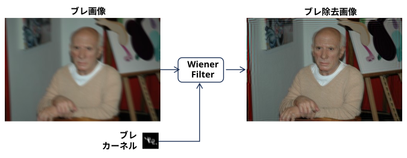
Richardson-Lucy (RL) Algorithm
『Bayesian-Based Iterative Method of Image Restoration』 (1972)
光学・画像処理の観点から、ベイズの定理を基礎として画像の復元アルゴリズムを導出した。
『An Iterative Technique for the Rectification of Observed Distributions』 (1974)
天文学の観点から、観測されたデータ分布（星の画像など）からブレの影響を正して真の分布を推定（整流化）する手法として導出した。
非負制約（復元した画素値がマイナスにならない）を自然に満たせるため、天体画像やバイオ顕微鏡画像のように「背景が真っ暗（ゼロ）で星や細胞が光っている」といった画像のデコンボリューションに現在でも非常に強力なデファクトスタンダードとして使われている。
(概要)
① 初期推定画像 \(x^{0}\) はブレ画像 \(y\) とする
② 推定画像 \(x^{t}\) とブレ・カーネル \(h\) で畳み込みを実施：\(x^{t}*h\)
③ ブレ画像を畳み込み結果で割る \(\displaystyle\frac{y}{x^{t}*h}\)
推定画像が正解なら、割り算の結果は 1 (または 1 に近い値)になり終了。
④ 割り算が 1 (または 1 に近い値) にならない場合は以下の式で推定を更新し、②～④を繰り返す。
\[
x^{t+1}=x^{t}\cdot\Big(h^* * \Big[\frac{y}{x^{t}*h}\Big]\Big)
\]
\(h^*\)： \(h\) 行列を180°回転した行列 (転置行列)
お試しコード
(data/task_deblur/src/deblur_by_RL.py)
・ 第一引数： ブレ画像
・ 第二引数： ブレ・カーネル画像 (黒地に白の軌跡)
・ 第三引数： オプションで反復回数を指定する (デフォルトは30回) ･･･ ちょっと時間が掛かる
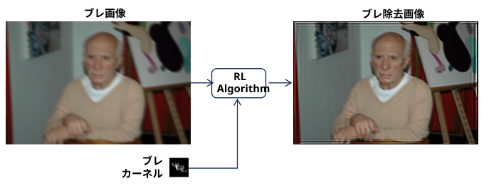
Hyper-Laplacian Prior
『Fast Image Deconvolution using Hyper-Laplacian Priors』 (NIPS 2009)
自然画像の勾配分布により適合する「ハイパー・ラプラシアン（\(L_{p}\) ノルム、 p < 1）」を導入。本来極めて困難な非凸最適化問題を、Lookup Table（LUT）を用いた効率的な割当て手法（Half-Quadratic Splitting法など）で高速かつ鮮明に解くブレイクスルーを起こした。
Shrinkage Fields
『Shrinkage Fields for Effective Image Restoration』 (CVPR 2014)
従来の反復最適化アルゴリズムの手続きを「ステップ展開（Unrolling）」し、各ステップのランダムフィールドと収縮関数をデータから直接学習（End-to-End）させたモデル。計算速度を秒単位からミリ秒単位へと高速化させた。
機械学習アプローチ
『A Machine Learning Approach for Non-blind Image Deconvolution"』 (CVPR 2013)
Non-blind復元に初めてニューラルネットワーク（MLP/CNN）を本格導入した。Fourier領域での粗い逆畳み込み（Wiener的な処理）の後に発生する特有のカラーノイズやアーティファクトを、ニューラルネットに学習させて除去する2段階アプローチを確立した。
Deep CNN Denoiser Prior
『Learning Deep CNN Denoiser Prior for Image Restoration" .』(CVPR 2017)
『Deep Wiener Deconvolution Network for Non-Blind Image Deblurring" 』(IEEE T-PAMI / CVPR 2020).
Wiener フィルターなどの古典的なブレ復元（データ忠実項）の最適化ループの中に、強力な「CNNデノイザー（画像Prior）」を組み込む手法。数学的な厳密さと、ディープラーニングの強力な表現力を両立させ、現代の標準的なフレームワークとなった。
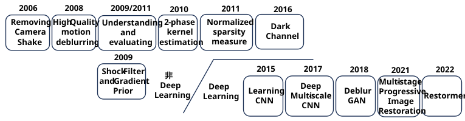
Removing Camera Shake
『Removing camera shake from a single photograph』(SIGGRAPH 2006).
現代的なシングル画像ブラインド・デブラリングの事実上の出発点(*)。自然画像の勾配（エッジ）が重い裾を持つ分布（Heavy-tailed distribution）に従う特性を利用し、アンシャープな画像からブレカーネルの形状を確率的に推定することに初めて成功した。
* それ以前にも Blind Deconvolution の研究はもちろんあった。
『Blind deconvolution through digital signal processing』 (1975)
Blind Deconvolution という言葉を初めて使い、その問題設定を明確に定義した最初の論文
『Automatic multidimensional deconvolution』 (1987)
2D 画像なら追加の情報なしでカーネルを分離できるという Zero-Sheet法を提案
『A Novel Recursive Filtering Method for Blind Image Restoration』 (1995)
NAS-RIF(Nonnegativity and Support constraints Recursive Inverse Filtering)を提案
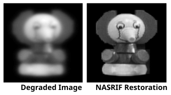
それらの研究はなぜ、現在の Blind Deblur の源流とみなされないのか、AIモードに聞いた。
1980〜90年代の古典的研究が「現実の複雑な手ブレ」を扱えず、数学的なトイプロブレム（おもちゃの問題）に終始していたのに対し、2006年の論文は「自然言語や写真の統計的性質」を初めて取り入れ、市販カメラのリアルなブレを実用レベルで解決してみせたからです。
High-quality motion deblurring
『High-quality motion deblurring from a single image』(SIGGRAPH2008)
確率モデルを陽に解くのではなく、目的関数（エネルギー関数）を定義して直接最適化する現代的な数理モデルの基礎を作った。
画像の平滑な領域（ノイズが乗りやすい）とエッジ領域を個別に捉える洗練された確率モデル（Piecewise Function）を導入。リンギング（復元時におこる波紋のようなノイズ）を強力に抑制し、視覚的に非常にクリーンな復元画像を提示して世界を驚かせた。
お試しプログラム
https://www.cse.cuhk.edu.hk/~leojia/programs/deblurring/deblurring.htm
「Click to download a package with the executable and examples」 をクリック
ダウンロードされた deblurring-release_v1.0.zip を解凍
run_picasso.bat を実行するとブレたピカソ画像が deblur されるが･･･
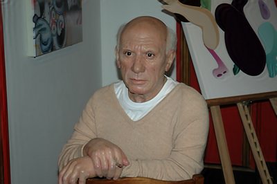
deblur.exe picassoBlurImage.png picassoOut.png 27 27 0.008 0.2 1 0 0 0 0 0
このパラメータをどうやって求めたらいいのか･･･
picassoBlurImage.png ･･･ ブレた画像のパス
picassoOut.png ･･･ deblurした画像のパス
27 27 ･･･ カーネルの幅、高さ
0.008 ･･･ ノイズの強さ
0.2 ･･･ ぶれの強さ
1 ･･･ ガンマ
0 0 0 0 0 ･･･ 重み1～重み5
Understanding and evaluating
『Understanding and evaluating blind deblurring algorithms』(CVPR 2009 / IEEE T-PAMI 2011)
最も直感的なMAP推定（\(\mathrm{MAP}_{x,k}\)：画像 \(x\) とカーネル \(k\) を同時に最大化する手法）を行うと、数学的には「全くブレ除去されていない元画像」という無意味な解（Delta関数カーネル）の方が確率が高くなってしまうことを証明した。
これにより、単純な同時最適化は破綻することが判明。研究者たちは「まず画像 \(x\) の候補を絞り込んで、カーネル \(k\) だけを先に正確に求める」アプローチ（\(\mathrm{MAP}_{k}\)）へと舵を切ることになった。
Shock Filter and Gradient Prior
『Fast motion deblurring using shock filters and gradient priors』 (SIGGRAPH Asia 2009)
それまで数時間〜数日かかっていた計算を数秒〜数分へと高速化し、実用化の扉を開けた。
職人技的な「エッジ予測ステップ」を導入。画像処理フィルタ（Shock Filter）をかけて無理やりエッジを尖らせ、そこからカーネルを推定して、マルチスケール（粗い解像度から細かい解像度へ）で高速にアップデートしていく手法を確立した。以降の最適化手法の「基本骨格」となった論文。
Two-phase kernel estimation
『Two-phase kernel estimation for robust motion deblurring』 (ECCV 2010)
「ボケ画像の中のどのエッジがカーネル推定に有効で、どのエッジが有害か」を明確に言語化した論文。
カーネルのサイズよりも細いテクスチャ（髪の毛や衣服の模様など）は、ブレ推定を狂わせる「ノイズ」になることを指摘。特定の太さ以上の主要なエッジ（Salient Edges）だけを厳密にマージン付きで選択する数理モデルを提案し、カーネル推定の頑健性を極限まで高めた。
Normalized Sparsity Measure
『Blind deconvolution using a normalized sparsity measure』 (CVPR 2011)
Levinらの指摘した「ボケ画像のまま（Delta関数）に収束する問題」を、新しい数式（ノルム）の発明によってスマートに解決した傑作。
従来の L₁ ノルムを L₂ ノルムで割った「正規化スパース性尺度（\(\frac{\|{}\nabla I\|{}_{1}}{\|{}\nabla I\|{}_{2}}\)）」を提案。この数式は、画像がボケると明確に値が大きくなり、鮮明になると小さくなる特性を持つため、最適化ループが「ボケ画像（Delta解）」へ逃げるのを数学的に完全にブロックできるようになった。
Dark Channel
『Blind Image Deblurring Using Dark Channel Prior" 』(CVPR 2016)
元々は dehaze (モヤ除去) に使われていた「画像局所のRGBの最小値はほぼ0（黒）になる」という性質が、ブレることで周囲ピクセルと平均化され、0 でなくなってしまうことに着目。この「ダークチャネルのスパース性」を正則化に組み込み、夜景、テキスト、顔写真など広範な画像で圧倒的なブレ推定精度を誇った最適化時代の集大成。
非Deep Learningの時代は、「画像の勾配（エッジ）をどうコントロールするか」の戦いだった。
2010年代後半からディープラーニング（CNN/GAN）が台頭すると、これらの複雑な数式（\(L_{p}\) ノルムやダークチャネルなど）を組む必要はなくなった (DNN が非明示的に関数近似するので)。しかし、現代のAI deblurでも「ネットワークにエッジ強調（Shock Filter的）な中間出力をさせる」構造や、「LevinのMAP理論を回避するために、まずカーネル空間的な特徴を別ブランチで学習させる（PnP手法など）」といった形で、この時代に培われたパラダイムがそのままアーキテクチャ設計の血肉となっている。
Learning CNN
『Learning a Convolutional Neural Network for Non-uniform Motion Blur Removal"』 (CVPR 2015).
画像の局所パッチから「不均一な（場所ごとに異なる）ブレカーネル」のエッジパターンを分類・推定するために初めてCNNを活用。Deep Learning が Blind Deblurring を実用に導く架け橋となった。
Deep Multi-scale CNN
『Deep Multi-scale Convolutional Neural Network for Dynamic Scene Deblurring" 』(CVPR 2017)
カーネル推定をバイパスし、End-to-Endでブレ画像を直接復元した最初期の論文。画像の解像度を粗いスケールから段階的に綺麗にしていく「マルチスケール設計」を提案し、今日でもベンチマークとして使われる「GoPro Dataset」を構築した功績も含め、絶対的なマイルストーン。
Deblur GAN
『DeblurGAN: Blind Motion Deblurring Using Conditional Adversarial Networks" 』(CVPR 2018)
GAN（敵対的生成ネットワーク）を Blind Deblurring に導入。従来のCNN で発生しがちだった「平均化されて全体がのっぺり・ぼやける（PSNRは高いが質感がない）」という課題に対し、テクスチャや微細なエッジのリアルな生成を可能にし、知覚的クオリティ（Perceptual Quality）を劇的に向上させた。
Progressive Image Restortion
『Multi-Stage Progressive Image Restoration" 』(CVPR 2021)
ブレ、デノイズ、雨粒除去など複数の復元タスクで当時のSOTA（最高精度）を総なめにしたモデル。複数のステージを並列・段階的に繋ぎ、エンコーダ・デコーダ間の情報欠損を防ぐアーキテクチャで、CNNベースのエンドツーエンド手法のひとつの完成形となった。
Restormer
『Restormer: Efficient Transformer for High-Resolution Image Restoration" .』(CVPR 2022)
計算コストの重いTransformerを画像復元向けに超効率化（TransformerのAttentionを空間方向ではなくチャネル方向に適用）したマイルストーン。圧倒的なクオリティで一時期の画像復元ベンチマークを席巻し、現在のベースラインとなっている。
お試しコード
・https://github.com/swz30/Restormer からコードをダウンロード
Code --> Download ZIP
・Restormer-main.zip を解凍する
・Deblur モデルの重みデータをダウンロードする
・https://drive.google.com/drive/folders/1czMyfRTQDX3j3ErByYeZ1PM4GVLbJeGK
motion_deblurring.pth を右クリック→ダウンロード
・single_image_defocus_deblurring.pth にリネームし以下に配置する
Defocus_Deblurring\pretrained_models
・実行環境を構築する
conda create -y -n restormer python=3.10
conda activate restormer
pip install torch torchvision
pip install scikit-image
pip install natsort
pip install opencv-python
pip install tqdm
pip install einops
・デモスクリプトを実行する
python demo.py
--task Single_Image_Defocus_Deblurring
--input_dir (ブレた画像を収めたディレクトリ)
--result_dir (deblur 結果を格納するディレクトリ)
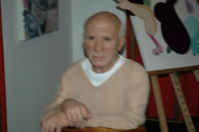